LEMA User's Manual
Chris J. Myers, Satish Batchu, Kevin Jones, Scott Little, Nicholas Seegmiller, Robert Thacker, David Walter, Zhen Zhang
1 Introduction
LEMA has been developed for the formal verification of analog and mixed-signal (AMS) circuits. LEMA includes the following tools:
- LHPN Editor - a tool to create a model using the
labeled hybrid Petri net (LHPN) format.
The LHPN format is described in
David Walter and Scott Little's PhD dissertations
(UofUtah 2007/2008).
- Verification tool - a tool to perform model checking on a LHPN model. The tool can use DBM, BDD, or SMT to represent the state space.
These model checkers are described in
David Walter and Scott Little's PhD dissertations
(UofUtah 2007/2008).
- Learn tool - a tool to generate LHPN, VHDL-AMS and Verilog-AMS models from simulation data.
This tool is described in
Scott Little's PhD Dissertation
(UofUtah 2008).
- TSD Graph Editor- a tool to visualize TSD files.
2 Project Management
A project is a collection of models, analysis views, learn
views, and graphs. As shown below, LEMA displays all project
files on the left, the open models, views, and graphs on the
right, and a log of all external commands on the bottom.
The menu bar is located on the top of the window in the Windows and
Linux versions. It is located on the top of the screen in the MacOS version.

2.1 Creating and Opening Projects
To create a new project, select New → Project from the File
menu as shown below. You will then be prompted to browse to a desired location
and to give a name to the project directory. After you do this,
click the new button and a new project directory will be created.
To open a project, select Open → Project from the File menu.
You will then be prompted to browse to a project directory to
open, and clicking open will open the project. You may also open
a project by selecting one of your five most recently opened
projects by selecting the project name shown in the File drop
down menu shown below.
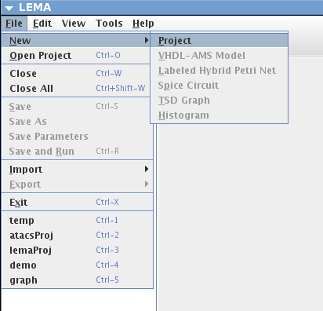
2.2 Creating Models and Graphs
After you have created or opened a project, you can create a
new model or graph to add to the project. To create a new
VHDL-AMS model, select New → VHDL-AMS Model from the
File menu as shown below. You will then be prompted to give a model id. At this
point, a simple text editor will open in a new tab. To create a new LHPN model
(see Section ), select New → Labeled Hybrid Petri Net from
the File menu. You will then be prompted to give a model id. At this point, an
LHPN editor (see Section ) will open in a new tab. To create a new
Spice model, select New → Spice Circuit from the File menu. You
will then be prompted to give a model id. At this point, a simple text editor
will open in a new tab. To create a new TSD graph, select New → TSD
Graph from the File menu. You will then
be prompted to give a name to the TSD graph. At this point, a TSD graph editor
(see Section ) will open in a new tab. Once a model or graph is
created, it can be opened again later by right clicking on the object in the
project window and selecting "Edit", or alternatively
double-clicking on the object.
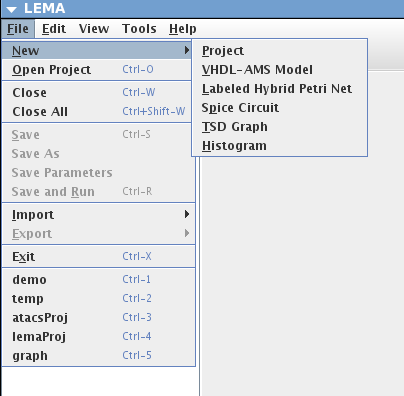
2.3 Importing Models
You can import into the current working project VHDL-AMS models
or LHPNs created by other programs or stored in other projects.
To import a VHDL-AMS model, select Import → VHDL-AMS Model
from the File menu as shown below. You will then be able to browse to
find a model to import. After selecting the desired model, click the
import button to bring the model into the project.
To import an LHPN, the procedure is the same except use the
Import → LHPN Model option. Before bringing the model
into the project, it will be edited to a format consistent with this tool.
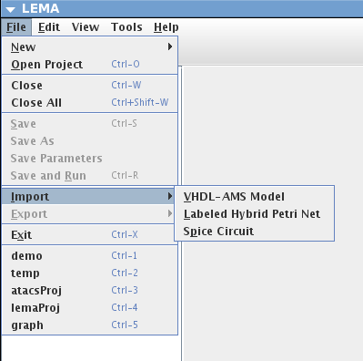
2.4 Editing Project Objects
All project objects can be modified by highlighting the object
and using a right mouse click to open a menu of options as shown
below. Using this menu, every type of object can be copied, renamed, or
deleted. For an LHPN, the "View/Edit" option opens the
model in an LHPN editor (see Section ). For a VHDL-AMS model,
the "View/Edit" option opens the model in a simple text editor. For a TSD
graph, the "View/Edit"
option opens the TSD graph in a TSD graph editor (see Section ).
For a probability graph, the "View/Edit" option opens
the probability graph in a histogram editor
(see Section ).
For a verification view, the "Open Verification View" option opens the
verification view (see Section ). For a learn view, the
"Open Learn View" option opens the learn view (see Section ).
 | |  |
|
| 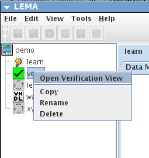 | | 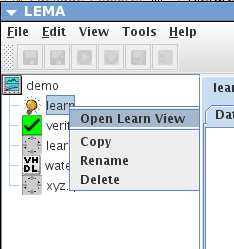
|
2.5 Viewing Project Objects
An LHPN can also be viewed using
GraphViz's
dotty program by right clicking on the model you want to view and
selecting the "View Model" option. A VHDL-AMS model may be converted into an
LHPN and viewed using the same "View Model" option.
2.6 Creating Tool Views
To perform verification or learning, right click on a model and
select "Create Verification View" (see Section )to perform
analysis or "Create Learn View" (see Section )
to perform learning. A verification or learn view may also be opened by
selecting the model in the file tree and selecting Learn or Verification from
the Tools menu. You will then be prompted to give a name to
your verification or learn view. After a name is entered, a tab with
the newly created view will open. Once a view is created, it can
be opened again later by right clicking on an analysis directory
and selecting "Open Verification/Learn View" or alternatively
double-clicking on the view.
When you create a verification view from a VHDL model, an LHPN is
automatically created for verification.
3
LHPN Editor
The LHPN editor as shown below allows the user to create or modify an LHPN
model of an analog or mixed-signal circuit. An LHPN model includes
places (see Section ),
transitions (see Section ),
variables (see Section ), and
control flow (see Section ).
Each of these items can be added, removed, or edited.
To add a new item, click on the appropriate add button. You
will then be prompted to provide a unique id and some properties
for this new item (as described below). After you have filled out
all of the required fields, click add and the new item will be
added to the LHPN.
To remove an item from the model, select that item and click
the remove button. The item will then be removed from the model.
However, if you try to remove an item that is being used
(for example, a variable that is assigned in a transition), you will first have
to remove its use.
To edit an existing item, select that item from the list and
click the edit button. An editing window will open and you will
be able to change the properties of that item. When you are done
editing this item, click save to save the changes to the item.
After the model is complete, press the Save LHPN button to store
the model. The Save As button can also be used to store the
model, but in this case, a new model ID will be requested and the
model will be saved using that ID.
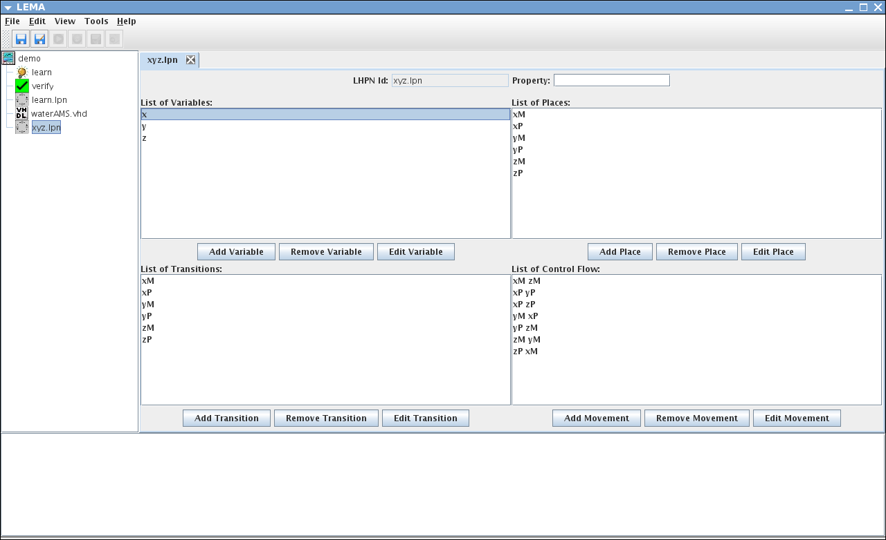
3.1
Places
Places define a certain characteristic of a circuit, according to the
definition of Petri nets. It may be noted that the LEMA tool does not support
implicit places in its LHPNs. If an LHPN with implicit places is imported into
the tool, the implicit places are automatically explicitly declared in the
imported net.
As shown below, a place has the following fields:
- ID: a unique ID composed of only alphanumeric characters and
underscores.
- Initial Marking: a boolean describing whether the place is initially marked.
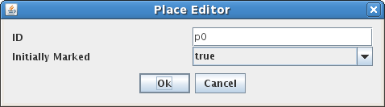
3.2
Transitions
Transitions define events in the petri nets. In the case of LHPNs, they are
elaborated by labels attached to the transitions, which are defined by included
fields.
As shown below, a transition has the following fields:
- ID: a unique ID composed of only alphanumeric characters and
underscores.
- Delay Lower Bound: the minimum amount of time that the transition can wait
after it is enabled before it fires. This can be written as an
expression.
- Delay Upper Bound: the maximum amount of time that the transition can wait
after it is enabled before it fires. This can also be an expression.
- Transition Rate: an exponential function expressing the probability that
the transition will fire. this is currently not enabled but will be
included in later releases.
- Enabling Condition: the condition that must evaluate to true in order for
the transition to be enabled.
- Assignments: assignments to boolean, continuous and integer variables.
This also includes rate assignments to continuous variables. This list
is edited using the "Add Assignment", "Edit Assignment", and
"Remove Assignment" buttons.
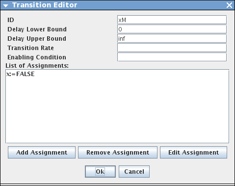
3.2.1
Assignments
When an assignment is added to the labeling function of a transition, the user
is prompted to define the assignment that is to take place. An assignment may
be made to the value of any variable or to the rate of a continuous variable.
An assignment consists of the following fields:
- Variable: the variable that is being assigned.
- Assignment Lower Bound: the lowest value that the assigned value can take.
This may be defined in terms of an expression parseable by ATACS.
- Assignment Upper Bound: the greatest value that the assigned value can
take. This also may be defined in terms of an expression.
- Rate Assignment: whether or not the assignment is being made to the value
or rate of a continuous variable (Note: this field is disabled for
non-continous variables).
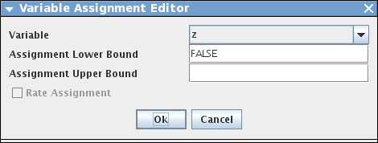
3.3
Variables
Variables represent the continuous, boolean, or integer signals used in an LHPN.
When a variable is created, the user will be prompted to input which type of
variable is being created.
As shown below, a variable contains the following fields:
- ID: a unique ID composed only of alphanumeric characters and
underscores.
- Initial Lower Bound: the lower bound of the variable's initial value.
- Initial Upper Bound: the upper bound of the variable's initial value.
- Mode: whether the variable is an inpout or an output to the circuit
(Note: only available for boolean variables).
- Rate Lower Bound: the lower bound of the variable's initial rate
(Note: only available for continuous variables).
- Rate Upper Bound: the upper bound of the variable's initial rate
(Note: only available for continuous variables).
To change a variable from one type to another, the user must remove the initial
variable and then add a new variable with the same id of the desired type.
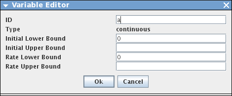
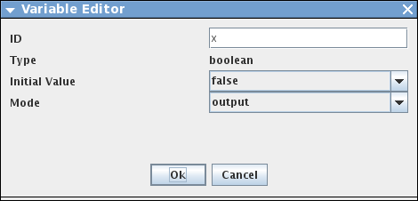
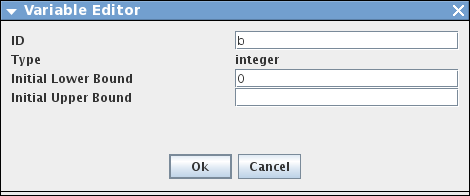
3.4
Control Flow
The control flow describes the edges in the LPN, or the connections between
places and transitions. The edges in the net are referred to as "movements"
within the tool and describe a directional edge between nodes of the graph.
As shown below, a movement includes the following fields:
- From: the place or transition at the leading end of the edge, i.e. where
the movement originates.
- To: the place or transition (of the type not used in the From field) at
the trailing end of the edge.
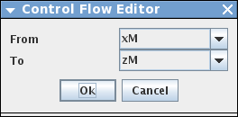
4
Text Editor
A simple text editor is available for viewing VHDL-AMS models and spice decks.
This editor does not have many features, so the user may desire to use a more
robust external text editor. To do so, select the Preferences option from the
Edit menu, click on the "Use External Viewer" option and enter the name of
the desired external text editor in the space provided. Every time that a
VHDL-AMS or Spice model is opened, it will be opened in the external text
editor.
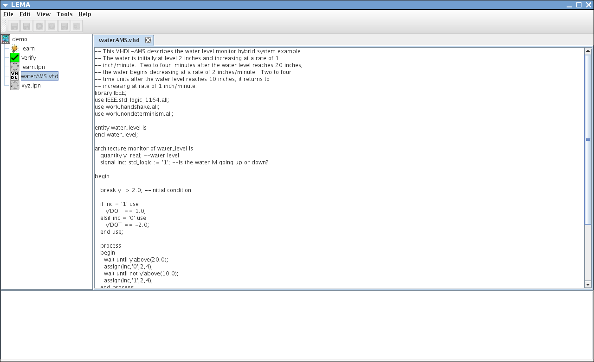
5
Verification View
The verification view is used to verify the property stated in the LHPN model.
The verification view as shown below includes tabs for
basic options (see Section ), and
advanced options (see Section ).
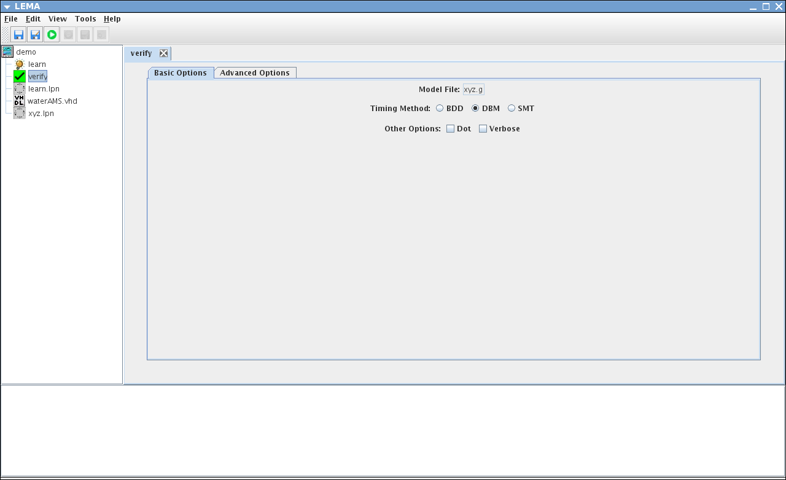
5.1
Basic Options
This tab includes the model being verified, basic timing options, and other
basic user options.
<ADD CITATION?>
The first line on the basic options panel is the filename of the LHPN being
verified. The LHPN verified is the one saved in the file location at the time
of verification.
The first set of radio buttons in this tab specifies the
timing method to be used in the verification.
- BDD specifies binary decision diagram modeling.
- DBM [NEEDS DESCRIPTION]
- SMT [NEEDS DESCRIPTION]
The other options refer to miscellaneous ATACS options.
- Dot [NEEDS DESCRIPTION]
- Verbose [NEEDS DESCRIPTION]
5.2
Advanced Options
This tab includes compilation options, advanced timing options, other advanced
options and a user specification for a BDD Linkspace size. The first set of
check boxes enables or disables compilations options.
- New Tab [NEEDS DESCRIPTION]
- Post Processing [NEEDS DESCRIPTION]
- Redundancy check [NEEDS DESCRIPTION]
- Don't Use Transform 2 [NEEDS DESCRIPTION]
- Expand Rate [NEEDS DESCRIPTION]
The next set of check boxes allows the user acces to more advanced timing
options.
- Generate RG [NEEDS DESCRIPTION]
- Subsets [NEEDS DESCRIPTION]
- Supersets [NEEDS DESCRIPTION]
- Infinity Optimization [NEEDS DESCRIPTION]
- Orbits Match [NEEDS DESCRIPTION]
- Interleave [NEEDS DESCRIPTION]
- Prune [NEEDS DESCRIPTION]
- Disabling [NEEDS DESCRIPTION]
- No fail [NEEDS DESCRIPTION]
- Keep going [NEEDS DESCRIPTION]
- Expand LHPN [NEEDS DESCRIPTION]
The other advanced options include
- No checks [NEEDS DESCRIPTION]
- Reduction [NEEDS DESCRIPTION]
- BDD Linkspace Size [NEEDS DESCRIPTION]
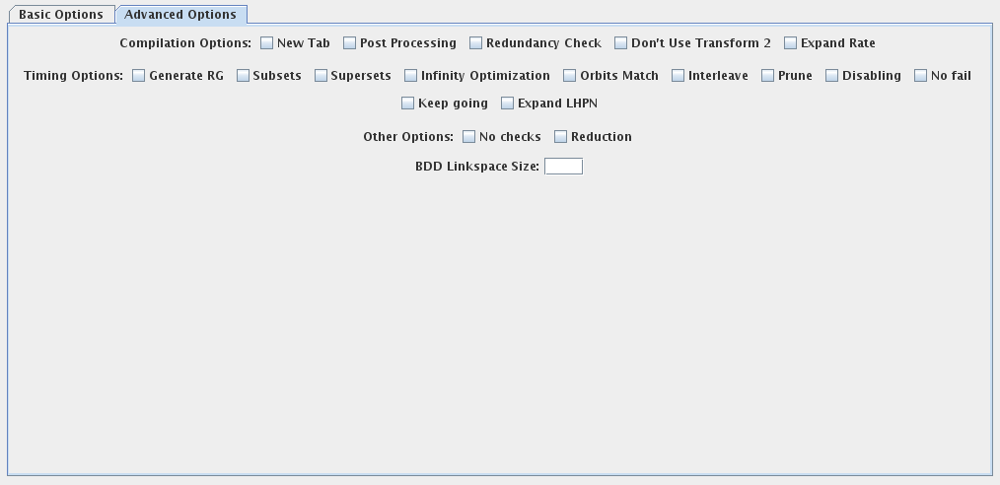
6
Learn View
The learn view is used to generate an LHPN from time series data. The learn
view includes tabs for a data manager (see Section ),
a learn tool (see Section ), and a
TSD graph editor (see Section ).
6.1
Data Manager
The data manager as shown below is used to both enter time series
experimental data as well as bring data
into the learn view. The Add button is used to create a new data
file. After pressing this button, enter the name of the new data
file, and then enter the data for this file using the data editor
to the right. The Remove button deletes all highlighted files.
Note that after highlighting one file, you can use the ctrl key
to highlight additional files or the shift key to highlight a
range of files. The Rename button is used to change the name of a
data file. The Copy button copies a data file. The Copy From View
button brings up a list of all analysis and learn views in the
current project, and data from the selected view will be copied
into this learn view. Finally, the Import button brings up a file
browser, and it allows you to import a data file from outside
this project. These files can be in time series data (TSD) format
(see Section ), comma separated value (CSV) format, or tab
delimited format (DAT).
The contents of the data file highlighted on the left appear in the
data editor on the right. Individual data entries can be modified,
new data points can be added using the Add Data Point button, data
points can be removed using the Remove Data Point button, and data
points can be copied using the Copy Data Point button. When you are
satisfied with all your changes, you should press the Save button
to record your changes.
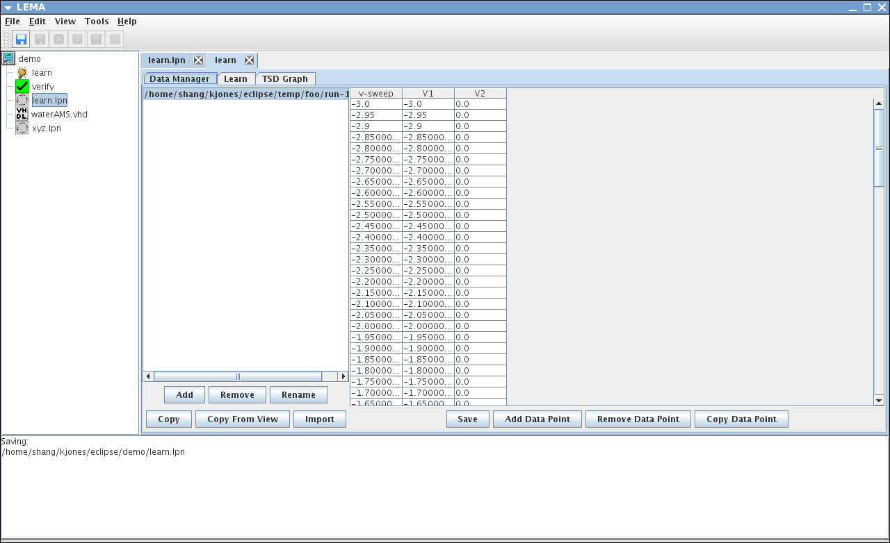
6.2
Learn Tool
The learn tool is used to generate abstract models from the
simulation data entered through the data manager described above. To
use this learn tool, adjust the basic options(see Section
) and advanced options(see Section
), if desired, then press the Save and Learn button.
The resulting abstract models in the form of Labeled Hybrid Petri Net
(see Section ),VHDL-AMS and Verilog-AMS can be viewed by
clicking appropriate options in the View Menu. The resulting circuit is
specified using our Labeled Hybrid Petri Net Format (see Section )
and is shown graphically using GraphViz's Dotty tool. There are also
menu options to save the parameters without learning, view the last learned
models, save the generated models into the project, and view the last run
log.
6.2.1
Basic Options
The learning options shown below are as follows:
- Iterations of Optimization Algorithm (default=10):
sets the number of iterations that will be run of the optimization algorithm
used when the bins are automatically generated. More iterations can improve
the generated bin levels but can also substantially increase run time.
- Number of Bins (default=4):
The number of bins value specifies how many values the
encoded time series data can assume.
- Assertion to be Verified:
The property that the generated LHPN must satisfy has to be provided
in this field. This is the property that would be verified by the
Verification tool.
- Equal Data Per Bins / Equal Spacing of Bins:
This radio button selects whether the auto generated levels
should be determined by equaling dividing the data between the
bins or by equally dividing the range of the data.
- Use Auto Generated Levels / Use User Generated Levels:
This radio button allows the user to select whether they want
the levels separating the bins to be auto generated or the user
would like to provide them.
- When using user provided levels, the Suggest Levels
button will provide the levels that would have been auto
generated as a suggestion. These levels can then edited by the
user. The number of bins for each species can also be individually adjusted.

6.2.2
Advanced Options
The following parameters which are used to configure the model generation
process can be specified through the advanced options tab.
- Windowsize(default = -1) :
Rates are calculated between points
that are separated by the number of points specified in this field.If
window size = -1, then rates are calculated using just the starting and
ending points of the bins.
- Pathlength(default = 15):
If Windowsize = -1, then pathlength
specifies the minimum number of consecutive timepoints which should be
in the same region for that region to be eligible for rate calculation.
- Epsilon(default = 0.1):
A variable is considered to be constant
if it is within the epsilon bound of a value for certain time.
- Absolute Time:
This checkbox determines whether a variable is
considered constant based on the amount of time or based on the number
of time points it stays within the epsilon bound.
- DMVC Run Time(default = 5us):
If absolute time is checked, DMVC
run time(described in
Scott Little's PhD Dissertation
)determines the minimum duration for which a variable has to be
constant so as to ensure that this duration is added to the total time
where the variable is constant.
- DMVC Run Length(default = 15):
If absolute time is not selected,
DMVC run length determines the minimum number of timepoints for which a
variable has to be constant so as to ensure that this duration is added
to the total time where the variable is constant.
- Fraction(default = 0.8):
A decimal value representing the fraction
of the total trace that must be constant for the variable to qualify to
be Discrete multi-valued continuous(DMVC).
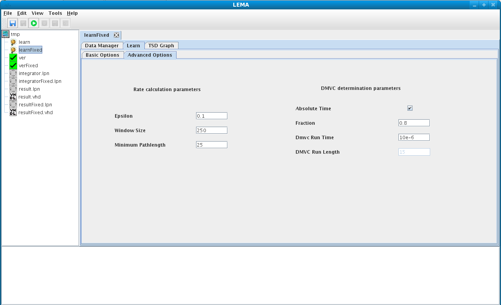
7
TSD Graph Editor
The TSD graph editor appears as a tab in the learn
view. TSD graphs can also be created at the top-level of the project
to allow you to integrate results from several learn
views. These graphs can be created using the New → TSD Graph
menu option. Once created, they can be viewed and edited by double
clicking on the graph in the project window. An example graph is
shown below.
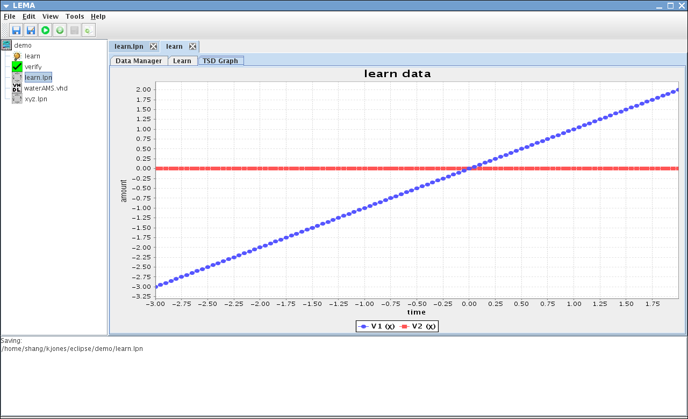
In the TSD graph editor shown below,
a graph is created by double clicking on the graph. You can then set
various parameters and select what values you would like to have
graphed. The parameters that you can select for a graph include:
- Title - The title of the graph.
- X-Axis Label - The label displayed for the x-axis.
- Y-Axis Label - The label displayed for the y-axis.
- X-Min - The starting value for the x-axis.
- X-Max - The ending value for the x-axis.
- X-Step - The increment for the x-axis.
- Y-Min - The starting value for the y-axis.
- Y-Max - The ending value for the y-axis.
- Y-Step - The increment for the y-Axis.
- Auto Resize Check Box -
Determines whether to automatically resize the graph for best fit.
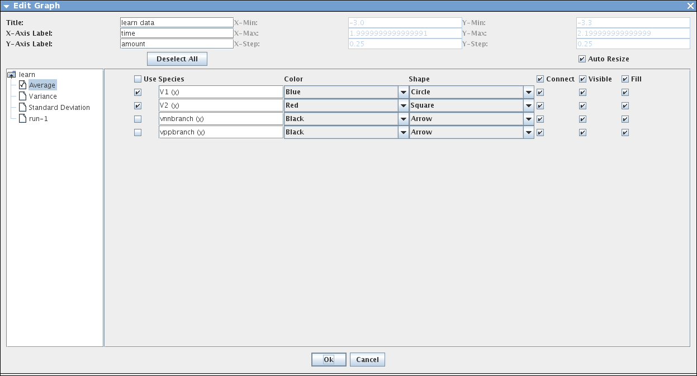
The data selection menu on the left displays all of the
available sets of data that can be graphed. In particular, one can
graph the average, variance, standard deviation, or results from
individual simulation runs. For a top-level graph, these
data sets will be organized hierarchically. Hierarchy is also
introduced when simulations in an analysis view are given
simulation IDs or after performing an analysis while sweeping parameter
values. After selecting a data set, one can select individual species to
graph and how they are to be displayed. In other words, for each
species, there are the following options:
- Use Check Box - Determines
whether or not this variable is displayed on the graph. Checking or
unchecking the box at the top changes the state for all variables in
the data set.
- Variable Label - The name displayed in the legend.
- Drop Down Menu Of Colors - The color that is used for this variable.
- Drop Down Menu Of Shapes - The shape that is used to mark the
data points.
- Connect Check Box -
Determines whether to connect the points with a line. Checking or
unchecking the box at the top changes the state for all variables in
the data set.
- Visible Check Box - Determines
whether shapes are visible on the line. Checking or
unchecking the box at the top changes the state for all variables in
the data set.
- Fill Check Box - Determines whether shapes are filled
on the line. Checking or
unchecking the box at the top changes the state for all variables in
the data set.
Note that a check mark appears on a data set to indicate that some
variables have been selected in that data set. Also, all variables can
be deselected by pressing the Deselect All button.
The "Save Graph" button saves the settings for the graph to
a file, so when you re-open the graph, it will reload this data and display
in the same way as before. The "Save As" button prompts for a
filename and creates a new top-level graph with that name.
Finally, the "Export" button prompts for a filename and exports
the data to the given name. The extension provided for the filename
is used to determine how the graph is to be exported. The
supported file types are:
- csv - comma separated value data file.
- dat - column separated data file.
- eps - encapsulated postscript.
- jpg - JPEG (Joint Photographic Experts Group).
- pdf - portable document format.
- png - portable network graphics.
- svg - scalable vector graphics.
- tsd - time series data format (see Section ).
If no extension is given, then the file type is the one
specified in the file filter (default is pdf). For image (i.e.,
not data) file types, you will be prompted to give a desired
pixel height and width for the file before the file is exported.
8
Preferences
User preferences can be set by selecting the Preferences option
under the File menu on Linux and Windows or the LEMA
menu on MacOS. As shown below, the user can decided whether they wish
to use an external editor for VHDL-AMS models, and which editor to use.
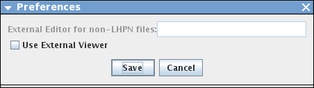
9
Labeled Hybrid Petri Net Format
Our labeled hybrid Petri net (LHPN) format specifies a system according to an
extended version of Petri nets. The graph is specified as a set of places and
transitions. Each transition is described with a set of labels described in a
format specific to LHPNs. The places, transitions, and boolean signals that are
general to Petri nets are described in a generalized .g file format, as follows.
Each space-delineated string on the lines ".inputs" and ".outputs"
declares a boolean input or output signal. Each space-delineated string on the
".dummy" line declares a "dummy" transition to be used in the net.
Beginning with the ".graph" line, each line with two space-delineated strings
represents a movement between a place and a transition. The ".marking" line
ennumerates the initially marked places in the graph, and the ".end" line
specifies the end of the file.
.inputs a b
.outputs x y z
.dummy yP xM yM xP zP zM
.graph
ip0 yP
xM ip2
ip5 xM
etc.
.marking {ip4 ip5}
.end
The labels and analog behavior of LHPNs is specified using a file format
specific to LHPNs. These lines will be interpreted as comments by other .g
parsers. Each line used in the ATACS tool begins with a "#@." (citation for
ATACS?), while each line specific to the LEMA tool begins with a "# - .".
Most of these lines are easily understood according to their beginning comments.
Each of the continuous and integer variables are declared in a space-delineated
"#@.variables" line included near the top of the file. Following the
variable declaration, the places are explicitly declared in a "# - .places"
line, which follows the format of the ".inputs" line. The inital values of
the boolean signals are given in a boolean vector in a "#@.init_state" line
of the following format. The signals are given in the order that they are
declared, input signals coming before output signals.
#@.init_state [boolean vector]
Each integer and continuous variable is given an initial value in a
"#@.init_vals" line, and each continuous variable is given an initial rate
value in a "#@.init_rates" line. The syntax of these lines is as follows,
the example being given for a ".#@init_vals" line.
#@.init_vals {<variable1=initial value1><variable2...>}
The enabling condition for each transition is given in a "#@.enablings" line
in the following format.
#@.enablings {<transition1=[enabling condition1]><transition2...>}
The delay for each transition is specified in the "#@.delay_assignments"
line according to the following format, where each lower and upper bound of the
delay is written as an expression parseable by ATACS. Likewise, the delays may
be of a single value for deterministic behavior, as seen on the second
transition.
#@.delay_assignments {<transition1=[lower bound, upper bound]><transition2=delay>}
The assignments to boolean variables on each transition are specified in the
following format, where each lower and upper bound, or each deterministic
assignment, is also written as an expression.
#@.boolean_assigments {<transition1=[boolean1:=[lower bound, upper bound]][boolean2:=value]><transition2...>}
Assignments to continuous variables and integers are combined onto a single
"#@.assignments" line and written in the same format as boolean assignments.
It may be noted that the only explicit difference between the declaration of
continuous and integer variables in the inclusion of a "#@.continuous" line
of the same format as the ".input" and ".output" lines.
Below is a simple, but complete example of an LHPN, including each of the
options mentioned above.
.inputs w x
.ouputs y z
.dummy t0 t1 t2
#@.variables a b c
#|.places p0 p1
#@.init_state [0011]
.graph
p0 t0
t0 p1
p1 t2
t2 p0
.marking {p0}
#@.init_vals {<a=0><b=3><c=[1,2]>}
#@.init_rates {<a=-2><b=1>}
#@.enablings {<t0=[~x&~y]><t1=[x&(a>=5)]><t2=[c>=4]>}
#@.assignments {<t1=[a:=5][c:=4]><t2=[c:=1]>}
#@.rate_assignments {<t0=[a:=1]><t2=[a:=0][b:=1]>}
#@.delay_assignments {<t0=2><t1=[0,inf]><t2=[0,5]>}
#@.boolean_assignments {<t0=[y:=TRUE]><t1=[y:=FALSE][z:=TRUE]><t2=[y:=~w]>}
#@.continuous a b
.end
10
Time Series Data Format
The time series data (tsd) format is composed of a
parenthesized and comma-separated set of time points. Each time
point is composed of a parenthesized and comma-separated set of
data for that time point. This first time point is composed of a
set of strings that are the labels for the data entries. The
first entry in each time point is by convention the time for that
time point. Below is an example simulation of the species CI and
CII from 0 to 1000 seconds with time points separated by 100
seconds.
(("time","CI","CII"), (0,0,0), (100,0,19), (200,20,25), (300,19,18),
(400,17,20), (500,17,46),
(600,26,40), (700,43,43), (800,63,28), (900,72,34), (1000,72,28))
11
List of Hot Keys
Below is a list of the hot keys used in Windows and Linux with the
MacOS equilvalents in parantheses.
- Ctrl-X (Cmd-Q) - Exit or quit
- Ctrl-O - Open Project
- Ctrl-S (Cmd-S) - Save
- Ctrl-R (Cmd-R) - Save and Run
- Ctrl-W - Close
- Ctrl-Shift-W - Close All
- Ctrl-, (Cmd-,) - Preferences
- Ctrl-L (Cmd-L) - Create Learn View
- Ctrl-M - Manual
- (Cmd-H) - Hide window
- (Alt-Cmd-H) - Hide other windows
- Ctrl-C - Copy
- F2 - Rename
- Delete - Delete
- F1 - View Circuit
- F3 - View Log
- F5 - Refresh View
12 Reporting Bugs and Feature Requests
In order to report a bug or to request a change or feature, please
send an email to:
atacs-bugs@vlsigroup.ece.utah.edu.
The subject line must begin with one of the following keywords or the
mail will be filtered by our spam filters:
- BUG - error or crash of the software
- CHANGE - something which can be improved
- FEATURE - something new
13 Credits
The LEMA tool is being developed at the University of Utah
by
Chris Myers,
Satish Batchu
Kevin Jones,
Scott Little,
Nicholas Seegmiller,
Robert Thacker,
David Walter,
and
Zhen Zhang.
Scott Little is now with Freescale in Austin, Texas, Nicholas Seegmiller is now
with Backcountry.com in Park City, Utah, and David Walter is now with the
Virginia State University.
File translated from
TEX
by
TTH,
version 3.81.
On 11 Sep 2017, 09:31.